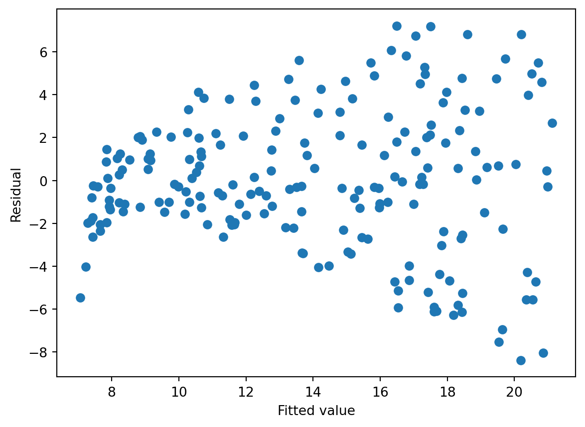
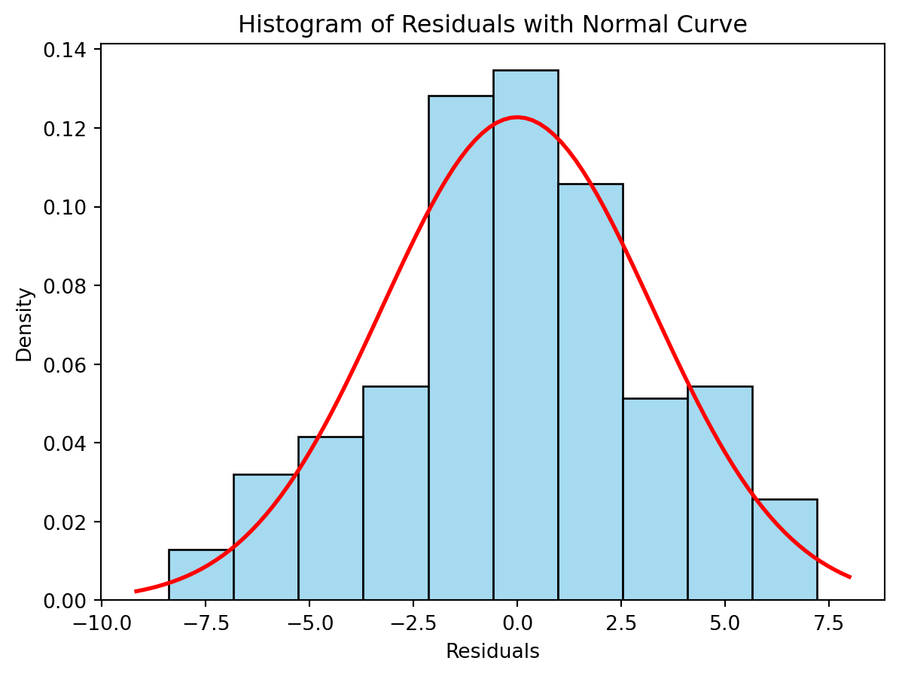
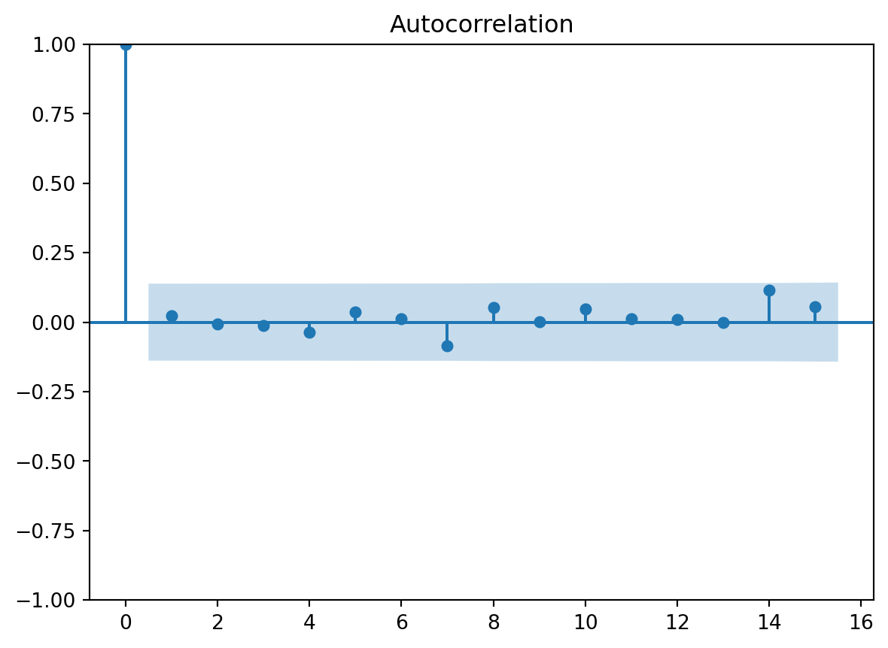
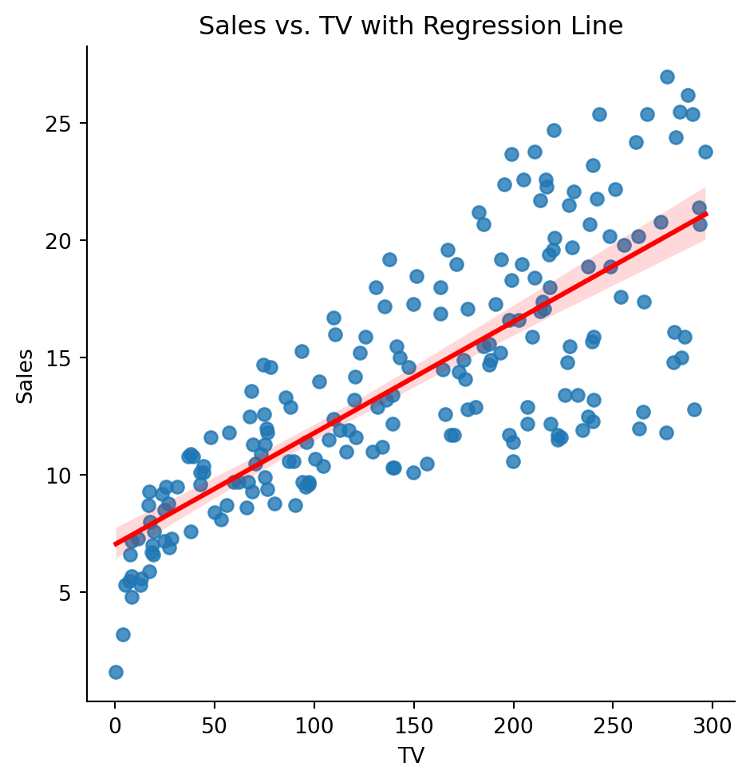
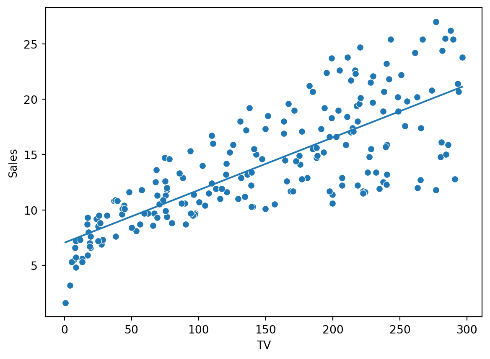
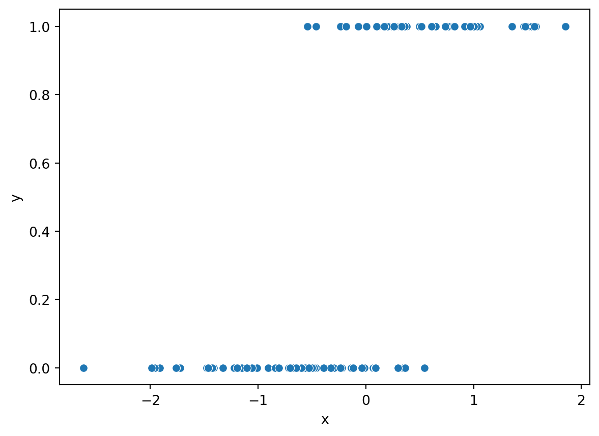

There are five main things we need to learn how to do in Python in this module.
Chi-square goodness of fit test for single variable
Chi-square independence test for two variables
Correlation test
Linear regression
Logistic regression
Chi-square goodness of fit test
Say we have a variable X that has four outcomes/categories A,B,C and D. We want to test if these four outcomes are equally likely.
\[\begin{equation*}
\begin{split}
H_0&: \text{The four categories are equally likely.}\\
H_A&: \text{The four categories are not equally likely.}
\end{split}
\end{equation*}\]
These hypotheses can be translated to \[H_0:P(X=A)=P(X=B)=P(X=C)=P(X=D)=1/4\] versus \[H_A:\text{At least one of categories is not equally likely as the others.}\]
This can be tested with a chi-square goodness of fit test. The test statistic is \[\chi^2 = \sum_{i\in\{A,B,C,D\}} \frac{(\text{observed}_i-\text{expected}_i)^2}{\text{expected}_i},\] where \(\text{observed}_i\) is the observed frequency of each category and \(\text{expected}_i\) is the expected under the null hypothesis.
Say we have observed the following frequencies:
\[A: 55,\, B: 45,\,C:47,\, D:60.\] The total sample size is \(n=207\). The expected frequencies, under the null hypothesis, for each category is then \(207/4=51.75\), or the mean of the observed frequencies. We run the test using the scipy.stats.chisquare function.
Here we get a p-value of 0.42, indicated weak evidence against the null hypothesis. For most reasonable significance levels, we would not reject the null hypothesis, and conclude that there is not sufficient evidence to suggest that the different categories a not equally probable.
Chi-square independence test: Contingency tables
Now, say we have an election with three parties A, B, and C one can vote for. We count the number of votes for each party for each gender of the voter. We want to find out if the voter’s gender and what he/she voted are independent variables. Does gender influence voting?
\[H_0: \text{Voting and gender are independent variables.}\]\[H_A: \text{Voting and gender are dependent variables.}\]
The table below shows the data gathered:
Gender
Voted A
Voted B
Voted C
Female
30
10
20
Male
20
25
15
Let us test this using the chi-square independence test:
\[\chi^2 = \sum_{i=1}^2\sum_{j=1}^3\frac{(\text{obs}_{ij}-\text{exp}_{ij})^2}{\text{exp}_{ij}}\sim\chi_{(2-1)\cdot(3-1)}^2=\chi_{2}^2,\] where \[\text{exp}_{ij}= \frac{\text{obs}_{i\cdot}\cdot \text{obs}_{\cdot j}}{n},\quad \text{where } \text{obs}_{i\cdot}=\sum_{j=1}^3\text{obs}_{ij}\quad\text{and}\quad \text{obs}_{\cdot j}=\sum_{i=1}^2\text{obs}_{ij}.\] Now, we do not need to do these calculcations, since we can simply use the python function scipy.stats.chi2_contingency for this test.
from scipy import statsimport pandas as pd# Create the contingency tabledata = [[30, 10, 20], [20, 25, 15]]# Optional: use a DataFrame for readabilitydf = pd.DataFrame(data, columns=["Voted A", "Voted B", "Voted C"], index=["Male", "Female"])# Perform chi-squared testchi2, p, dof, expected = stats.chi2_contingency(df)# Print resultsprint("Chi-squared statistic:", chi2)print("p-value:", p)print("Degrees of freedom:", dof)print("Expected frequencies:")print(pd.DataFrame(expected, columns=df.columns, index=df.index))
Chi-squared statistic: 9.142857142857142
p-value: 0.010343173196618252
Degrees of freedom: 2
Expected frequencies:
Voted A Voted B Voted C
Male 25.0 17.5 17.5
Female 25.0 17.5 17.5
The p-value here is \(0.0103\). At a 5% significance level, we would conclude that there is voting pattern depends on the gender of the voter. The p-value is low, which, in a degree-of-belief interpretation, suggest strong evidence against the null hypothesis.
Correlation test
We start by loading the ISLR data and plotting the relationship between sales and money spent on TV ads as a scatterplot:
import pandas as pdfrom scipy import statsfrom statsmodels.formula.api import olsimport numpy as npimport seaborn as snsimport matplotlib.pyplot as plturl = ("https://raw.githubusercontent.com/nguyen-toan/""ISLR/refs/heads/master/dataset/Advertising.csv")ad = pd.read_csv(url)print(ad.columns)sns.scatterplot(x="TV",y="Sales", data=ad)plt.show()
We want to test if the two variables are correlated. Let \(\rho\) be correlation between sales and TV ad spending. We want to test if the two are positively correlated, implying that higher TV ad spending is associated with higher sales numbers. Then our hypotheses are \[H_0: \rho=0\quad \text{vs}\quad H_A: \rho> 0.\]
We get a clear rejection of the null due to the low p-value. The estimated correlation is 0.78.
Linear regression
Here we will demonstrate how we can fit a simple linear regression model using the ISLR data set trying to explain sales (the dependent variable) using predictors/covariates from money spent on advertising trough Newspaper, Radio and TV.
Let us now fit a linear regression model using the ols function from statsmodels.formula.ap. The model can be written as
\[\text{Sales}_i = \beta_0+\beta_1\text{TV}_i +\epsilon_i,\] where \(\epsilon_i\) is the error, \(\text{Sales}_i\) is the sales and \(\text{TV}_i\) is the money spent on TV ads for observation \(i=1,\ldots, n\). The parameters are \(\beta_0\) and \(\beta_1\).
From the print out, we see that the intercept is estimated to be \(\hat\beta_0 = 7.0326\) and the coefficient associated with TV ads \(\hat\beta_1 = 0.0475\). The interpretation of this, given the model, is that we spent no money on TV ads, the sales would be 7.0326 (_0), while if we increase the money spent on TV ads by one unit, the sales is expected to rise with 0.0475 (_1) units. We also see that the p-value reported for \(\beta_1\) suggest that, at the any reasonable significance level, the null hypothesis that \(\beta_1 = 0\) would be rejected (p-value \(=0.000<0.05\)). Thus, the model suggests that there is a significant association between advertisement on TV and sales.
Add more explanatory variables/predictors/covariates
Say we wanted to add another predictor variable, namely the advisement on Radio. The model would then be \[\text{Sales}_i = \beta_0+\beta_1\text{TV}_i+\beta_2\text{Radio}_i +\epsilon_i,\] with similar definitions of the elements as above.
The interpretation of the coefficients in this model is similar as the one above. All effects have p-value of zero, indicating that the effects are non-zero (we reject null hypotheses of zero-effects). The effect of radio is interpreted as an increase of one unit of Radio ads is associated with 0.188 increase in sales. Note that I use associated with, and not wording such as implies or caused by. There is no causality here, although it may be tempting to claim so.
Checking model assumptions
The models assumptions needs to be checked. We have
Linearity
Independent residuals
Constant variance
No perfect multicolinearity
Residuals are normally distributed
Linearity: There needs to be a linear relationship between the dependent variable (y) and the covariates of the models (the x’s). With just one predictor, this can be check by plotting x against y and see if a straight line would be a suitable description of the relationship. With more than one covariate, this becomes less straight forward.
One way to check it, is to look at the scatterplot of the fitted values (\(\hat y_i\)) against the residuals \(\epsilon_i\). If there is a clear pattern in the scatterplot, this may be an indication of violation of the linearity assumption. We can also use this plot to check the constant variance/homoskedastiticty assumption. If the residuals spread out more as fitted values increase, this is an indication of a violation of the constant variance assumption.
import matplotlib.pyplot as pltplt.scatter(ols_result.fittedvalues, ols_result.resid)plt.xlabel('Fitted value')plt.ylabel('Residual')plt.show()

The residuals versus fitted plot shows clear signs of hetereskedasticity (non-constant variance). The spread of the residuals is increasing with the fitted value (\(\hat{ \text{sales}}\)). There also seem to be a systematic pattern here that is not accounted for by the model (upswing and then down again for larger fitted values), indicating the relationship is more complex than what a linear representation can explain.
We can also check the normality assumption by plotting a histogram:
sns.histplot(ols_result.resid, kde=False, stat='density',bins=10, color='skyblue', edgecolor='black')# Plot normal distribution curvemu, std = ols_result.resid.mean(), ols_result.resid.std()xmin, xmax = plt.xlim()x = np.linspace(xmin, xmax, 100)p = stats.norm.pdf(x, mu, std)plt.plot(x, p, 'r', linewidth=2)# Labels and titleplt.title("Histogram of Residuals with Normal Curve")plt.xlabel("Residuals")plt.ylabel("Density")plt.show()

Ideally, the histogram should match the red line representing the normal distribution. It is not a perfect match, but this may be hard to assess, since the histogram depends heavily on the bins.
An alternative is to use a qq-normality plot. This plots the quantiles of the residuals to the quantiles of normal distribution. If the residuals are normally distributed, the points should lie close the straight line.
We can also check for correlation in the residuals. That is, we plot the correlation with the residual \(\epsilon_j\) and lagged residuals \(\epsilon_{j-h}\), at different lags \(h=0,1,2,\ldots\). This makes most sense if the data is organized as a time series, where each observation is associated with a different point in time. Ideally, there should be now correlation in the residuals, since we assume they are independent. The plot gives 95% confidence intervals for the correlation coefficients, and ideally all estimated correlations except for lag zero should be inside this 95% confidence band.
from statsmodels.graphics.tsaplots import plot_acfplot_acf(ols_result.resid, lags=15)plt.show()

The multicolinearity assumption is hard to check in practice. One can investigate the correlation between the covariates, and if this is close to 1, we have a issue. However, if the model only has one covariate, then this assumption is fulfilled. We need at least two predictors to potentially have problems with multicolinearity.
Plotting the regression line
We can plot the linear regression (when we have only one predictor) using the sns.lmplot function. This estimated a simple linear regression between x and y and plot it together with a 95% confidence interval (shaded area). Note that this is a confidence interval for the expected sales.
sns.lmplot(x="TV", y="Sales", data=ad,line_kws={"color": "red"})plt.title("Sales vs. TV with Regression Line")plt.show()

We can also plot the fitted values against the specific covariate:
sns.scatterplot(x="TV", y ="Sales", data=ad)sns.lineplot(x=ad["TV"], y = ols_result.fittedvalues)plt.show()

Prediction
One thing is to understand the relationship between money spent on advertisement. Another is to use the model for prediction. Say we want to predict what our sales will be, if we spend 100 or 200 units on TV ads. We could do this with scenarioes for the Radio ads and Newspaper ads also, but our model only use TV here.
The predicted sales are \(11.79\) and \(16.53\). Note that two intervals are reported: one for the mean and one for . The first is a \(95\%\) confidence interval for the expected sales given TV ad spending of \(100\) and \(200\), while the second is a \(95\%\) prediction interval for a new observation of sales given TV ad spending of \(100\) and \(200\), respectively.
The prediction interval is wider than the confidence interval, which is always the case. This is because the prediction interval includes both the uncertainty in the estimated mean response and the additional variability of a new observation.
We are \(95\%\) confident that the true expected sales lies in the interval \([16.006, 17.074]\), while a new observation of sales is expected to lie in the interval \([10.092, 22.988]\) with \(95\%\) confidence.
Logistic regression
Logistic regression is a type of extension of the linear regression. We use it whenever we have a binary \(Y\in\{0,1\}\), and want to the model the probability of \(Y=1\). This is achieved by using a logit-transformation of a linear function of the covariates.
\[P(Y=1|X=x) = \frac{e^{\beta_0+\beta_1 x}}{1+e^{\beta_0+\beta_1 x}}=\frac1{1+e^{-\beta_0-\beta_1 x}}.\] As is shown in the video on logistic regression, this model is equivalent to modelling the log odds of Y as a linear function of x.
\[\log \frac{P(Y=1|X=x)}{1-P(Y=1|X=x)}=\beta_0+\beta_1x.\] Let us simulate the same data using this relationship:
from scipy.stats import norm, binomimport pandas as pdimport numpy as npimport seaborn as snsimport matplotlib.pyplot as pltnp.random.seed(42)x = norm.rvs(size=100)# Linear termlinear_pred =0.5-5* x# Convert to probabilities using the logistic functionp =1/ (1+ np.exp(linear_pred))# Simulate binary response y from a binomial distribution (n=1 trials each)y = binom.rvs(n=1, p=p)df = pd.DataFrame({'x': x, 'y': y})sns.scatterplot(x="x", y="y", data=df)plt.show()

# Fit logistic regression:import statsmodels.formula.api as smmodel = sm.logit('y ~ x', data=df)result = model.fit()print(result.summary())
Here the interpretation is that a unit increase of x, is associated with a 4.42 unit increase in the log-odds of \(Y\). Another way of saying the same thing, is that a unit increase of x multiplies the odds of Y being 1 with \(e^{4.42}\).
Since \(Y\) can take values 0 and 1 and the predicted probability is in \([0,1]\) we can plot them together as function of \(x\). The red line below is the predicted probability of \(Y=1\) as a function of \(x\). We see that the probability is zero for low values and in the middle of the interval it start to increase. For high values, the probability is predicted to 1.